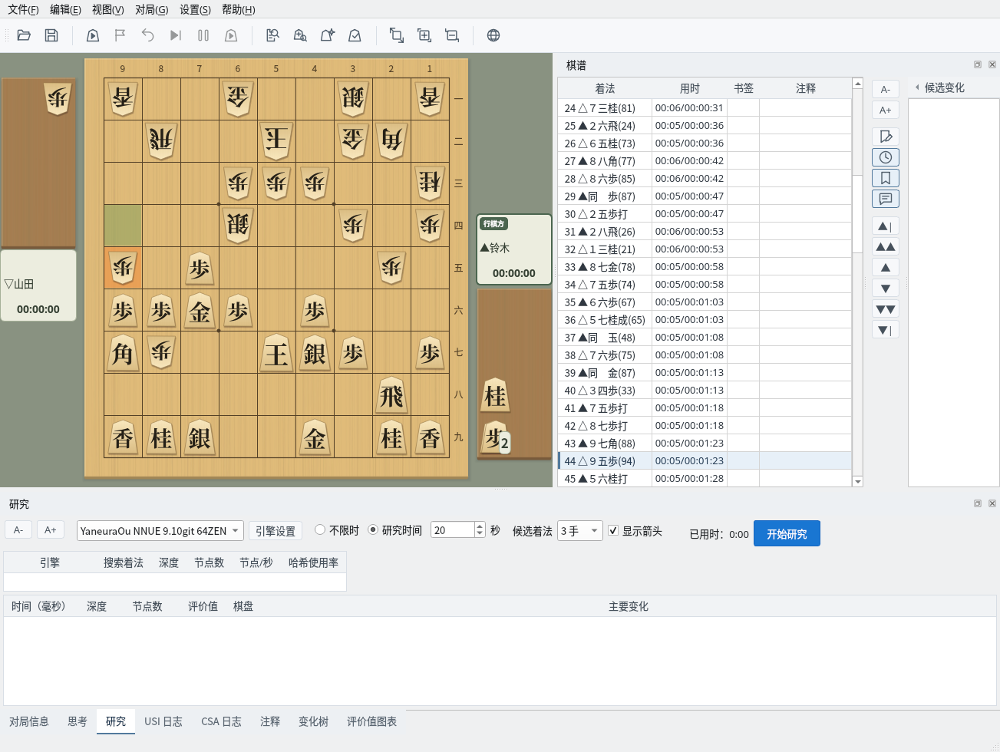
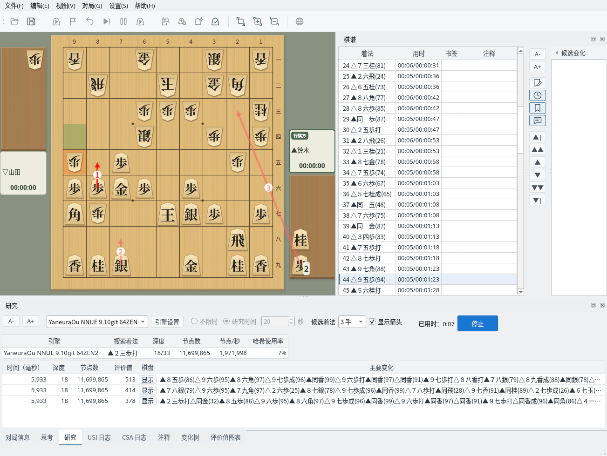
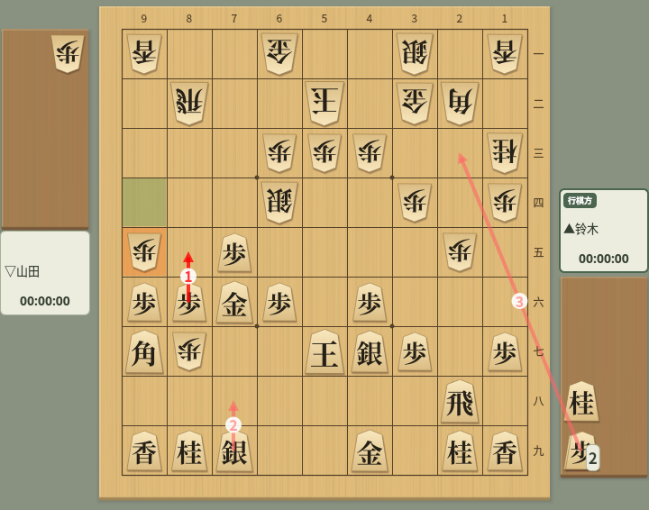
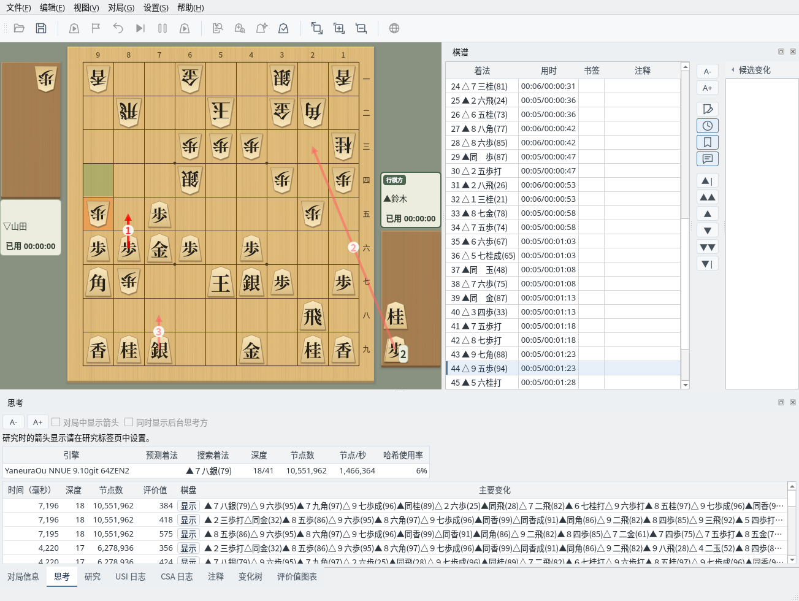
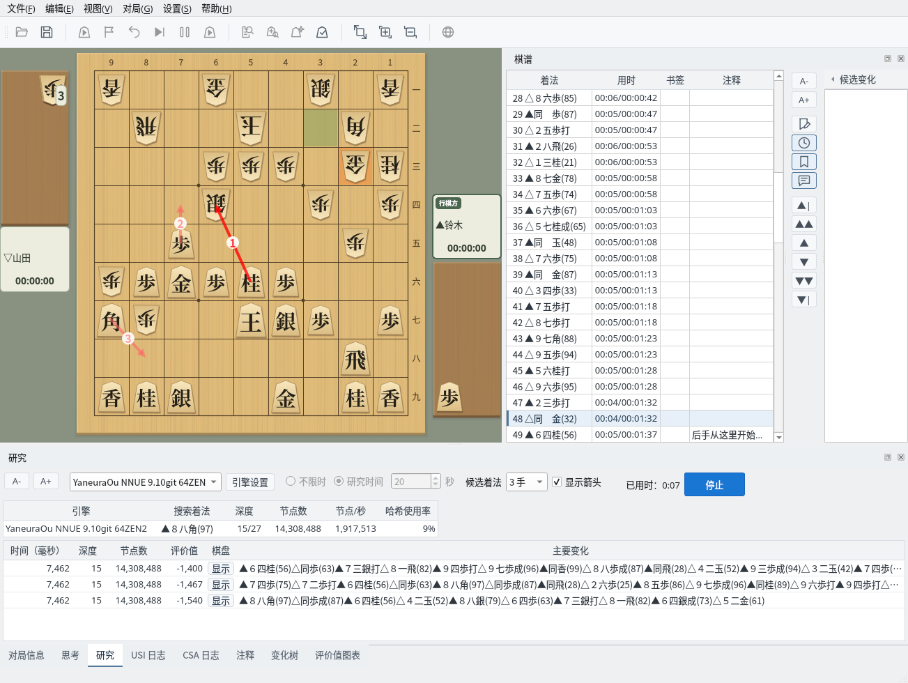

让引擎研究任意局面的候选着法
截图在 Linux 上以简体中文界面拍摄。
在“研究”标签页中设置研究条件
“研究”标签页可以设置以下项目。设置会被保存，下次启动时也会恢复。
在棋谱栏中选择要研究的局面，点击“开始研究”，即开始研究棋盘上显示的局面。研究时间的设置在研究中无法更改，如需更改，请先点击“停止”结束研究。

“研究”标签页：设置引擎、研究时间、候选着法数量和箭头显示
实时查看引擎的候选着法和主要变化
开始研究后，上方显示引擎的搜索状态（正在搜索的着法、深度、节点数、节点/秒、哈希使用率），下方按评价值从高到低列出候选着法。每一行显示评价值、深度、节点数和主要变化；点击“棋盘”列中的“显示”，可以在棋盘上重放主要变化。
研究中也可以更改候选着法的数量和引擎，更改后会重新搜索。到达研究时间后，搜索停止，结果仍保留在画面上；选择其他局面或更改候选着法数量即可继续研究。要结束研究，请点击“停止”。

研究中：实时显示候选着法、评价值和主要变化
棋盘上以带有名次编号的箭头显示候选着法。最佳着法为深红色，第 2 名以后为浅红色。打入持驹的着法，箭头从驹台出发。可以用“显示箭头”复选框切换显示或隐藏，停止研究后箭头会消失。

候选着法箭头：编号为名次，从驹台出发的箭头是打入持驹步的着法
“思考”标签页按从新到旧的顺序列出从引擎收到的思考信息，可以看到主要变化如何随搜索加深而变化。研究时的箭头显示在“研究”标签页中设置，因此“思考”标签页中的“对局中显示箭头”和“同时显示后台思考方”不可用。

“思考”标签页：按从新到旧的顺序显示引擎的思考信息
选择棋谱中的其他局面继续研究
研究中点击棋谱栏中的其他着法，或用导航按钮移动局面，就会在该局面重新开始研究，已用时也从 0 重新计算。可以接连研究感兴趣的局面。

继续研究：在棋谱栏中选择其他着法后，会在该局面重新开始研究